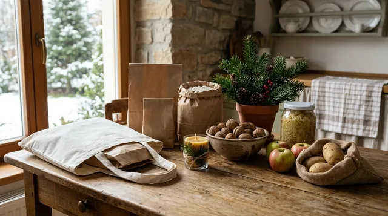

Blog
Tips on grocery shopping, saving money and wasting less food. New articles regularly.
-

How to save money on Christmas food: practical tips
How to save money on Christmas food: set a budget, plan the menu, check what you have, use offers wisely and buy at the right time, with fewer leftovers.
-

How to store Christmas cookies so they last until the holidays
How to store Christmas cookies: which to bake first, where to keep them, which ones freeze well and how to handle cream-filled treats so nothing goes to waste.
-

Christmas food shopping list: how to plan it and waste less
How to make a Christmas food shopping list, when to buy what, and how to waste less food over the holidays. A 6-step plan with a shopping timeline.
Our first articles are on the way.